*The full research for this page is not yet finished and finalized and will instead be included in future commits. Placeholders will be retained for sections with incomplete data.
General Description: SOGIE, meaning sexual orientation and gender identity expression, refers to characteristics common to all human beings, as these facets are integral to our identities and lives as individuals. Although commonly associated with LGBTQ+, everybody, even cisgender heterosexuals, has a SOGIE. The LGBTQ+ spectrum, on the other hand, falls under SOGIE. Individuals under this umbrella identify themselves as lesbian, gay, bisexual, trasngender, and queer or questioning, among many other genders and sexualities.
Lesbian: refers to women or unaligned/feminine aligned nonbinaries who are physically, sexually, and/or emotionally attracted to other women or unaligned/feminine aligned nonbinaries
Gay: a term used to refer to describe everyone under the queer spectrum, yet in the acronym, is used to refer to a man or unaligned/masculine aligned nonbinaries who are attracted to other men or unaligned/masculine aligned nonbinaries
Bisexual: refers to people who experience physical, sexual, and/or emotional attraction to any and all genders
Transgender: an umbrella term describing individuals who possess or express different gender identities, not just binary ones, than their assigned gender at birth
Questioning: a term used to describe individuals who are exploring and experimenting with their sexual or romantic orientation and gender identity expression
Examples of other genders and sexualities not in the acronym but in the spectrum (*to be researched and included soon): Pansexual, Asexual, Non-binary, Genderfluid, Intersex
Short history of the term and some revolutionary figures: There are many variations of the acronym LGBTQ+ that have been and is still continuously being developed by those in the community. It is important that we take a look into these because it is directly linked with the history and development of not only the term but the community itself. Speaking of the history of the LGBTQ+ community, there are many revolutionary figures, both historical and contemporary, who have been and will continue fighting for the community's rights and have done lots for its development. We will be discussing 5 revolutionary historical figures and 5 revolutionary contemporary figures who are part of the LGBTQ+ spectrum. This will be limited to those under the spectrum only: of course, allies are important but we must shine light on those who actually identify under it.

.jpg)
.jpg)
 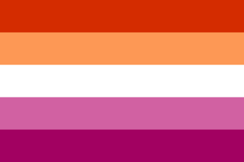
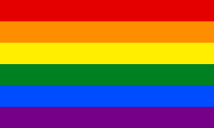
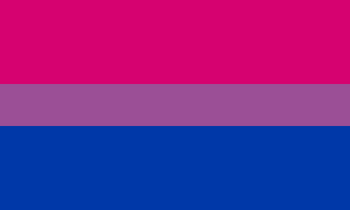
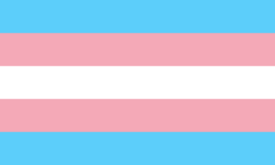
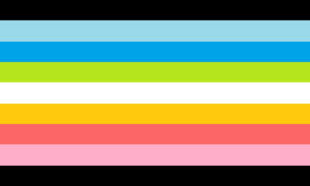
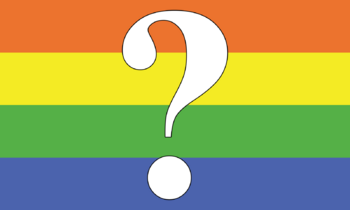
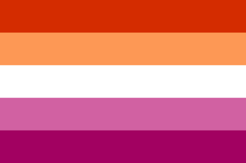
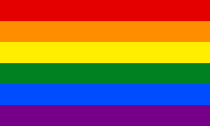
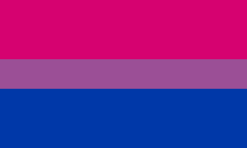
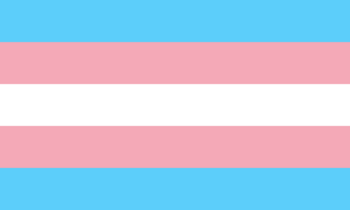
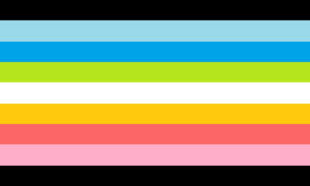
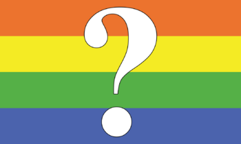